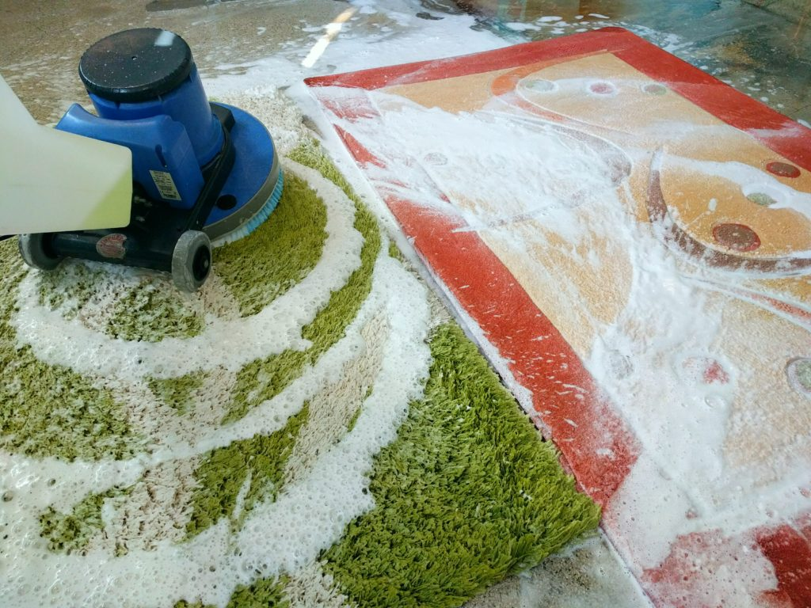

Menu
Search

Zapraszamy do skorzystania z profesjonalnych usług naszej pralni dywanów.
Oferujemy Państwu pranie dywanów na wskroś czyli najlepszą metodą dostępną na rynku.
Pranie dywanów odbywa się w całej jego strukturze
czyli prane jest runo oraz osnowa dywanu gdyż jest on szorowany w kąpieli wodnej i aktywnej pianie.
Posiadamy wirówkę do dywanów co pozwala nam wykorzystać w 100% możliwości prania metodą na wskroś.
Dywan po praniu i odwirowaniu w wirówce jest tylko wilgotny co pozwala wysuszyć go w relatywnie niskim czasie.
Dzięki temu możemy uniknąć uszkodzenia runaoraz deformacji lub jakichkolwiek innych uszkodzeń dywanu.
Oferujemy Państwu pranie dywanów na wskroś czyli najlepszą metodą dostępną na rynku.
Pranie dywanów odbywa się w całej jego strukturze
czyli prane jest runo oraz osnowa dywanu gdyż jest on szorowany w kąpieli wodnej i aktywnej pianie.
Posiadamy wirówkę do dywanów co pozwala nam wykorzystać w 100% możliwości prania metodą na wskroś.
Dywan po praniu i odwirowaniu w wirówce jest tylko wilgotny co pozwala wysuszyć go w relatywnie niskim czasie.
Dzięki temu możemy uniknąć uszkodzenia runaoraz deformacji lub jakichkolwiek innych uszkodzeń dywanu.